01 RESEARCH · 研究
阶段化，让康复有节奏
家庭康复最大的问题不是「没有测量」，而是「不会解释」——做错没人纠正，做对没人看见。
✗
静态清单
目标不随恢复变化
✗
缺少解释
做错了，没人纠正
✗
无人见证
做对了，没人看见
发现 01 · 临床指南
进阶由标准驱动，而非周数
依据 ROM、疼痛与动作控制——三阶段框架的骨架
发现 02 · 反馈设计
测量 ≠ 理解
缺「为什么、错在哪、先改什么」——催生可解释反馈
发现 03 · 计划执行
区分失败原因，再调整
比提醒坚持更有效——催生失败分型与保护性回退
发现 04 · 进展理解
用关键片段讲进展
episode 叙事优于仪表盘——催生 episode 式进展
发现 05 · 运动学习
反馈不必依赖屏幕
听觉 / 触觉同样有效——催生 Eyes-free 范式
证据 · RCT
数字康复确实有效
问题不在该不该做，而在怎么做得可理解
Research Output · 三阶段训练模式
进阶由标准驱动，而非周数
STAGE 01
早期保护期
强引导 · 强保护
信息密集，把患者牢牢托住
信息密集，把患者牢牢托住
STAGE 02
中期恢复期
目标抬升 · 反馈淡出
力反馈降级为引导而非约束
力反馈降级为引导而非约束
STAGE 03
后期功能期
屏幕退场 · 走向自主
「系统对我有信心了」
「系统对我有信心了」
反馈密度随阶段递减递减本身，被感受为信任
01 Safety
安全
角度墙始终冗余在目标之上
02 Explainable
可解释
知道为什么进阶、为什么不进阶
03 Motivation
保持动机
目标永远「再多一点点」
04 Autonomy
走向自主
从被辅助过渡到自主管理
N=10
被试内实验
3×3
拉丁方平衡
Conditions
C1 · C2a · C2c
视觉基线 / 早期 / 后期配置
Measures
客观 + 主观
ROM、节律 + 三维自评量表
Analysis
质性主题分析
身体觉知 · 关系 · 陪伴感知
02 HARDWARE · 硬件
一副会施力的膝关节外骨骼
感知膝角，主动施力——给独自康复的人，多一层引导与保护。
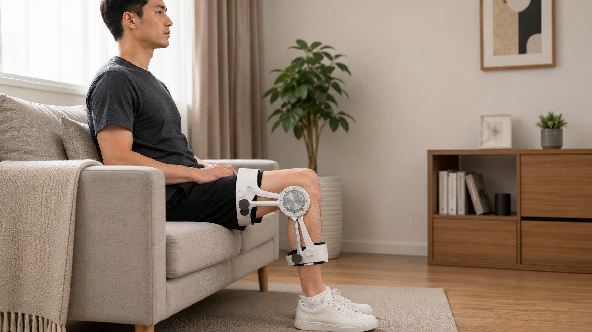
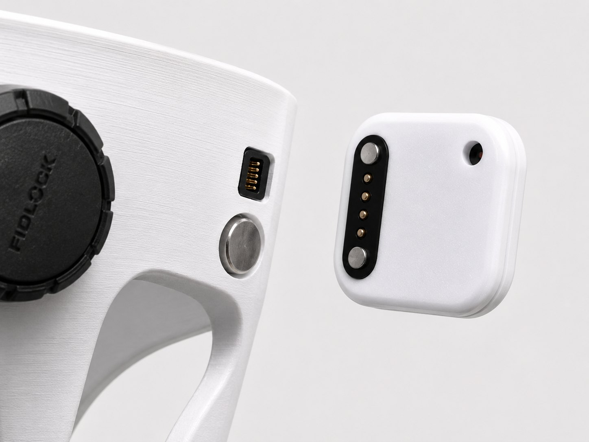
磁吸 IMU · 吸上即连
磁吸对位 + Pogo pin；后期可独立穿戴——形态随阶段递减
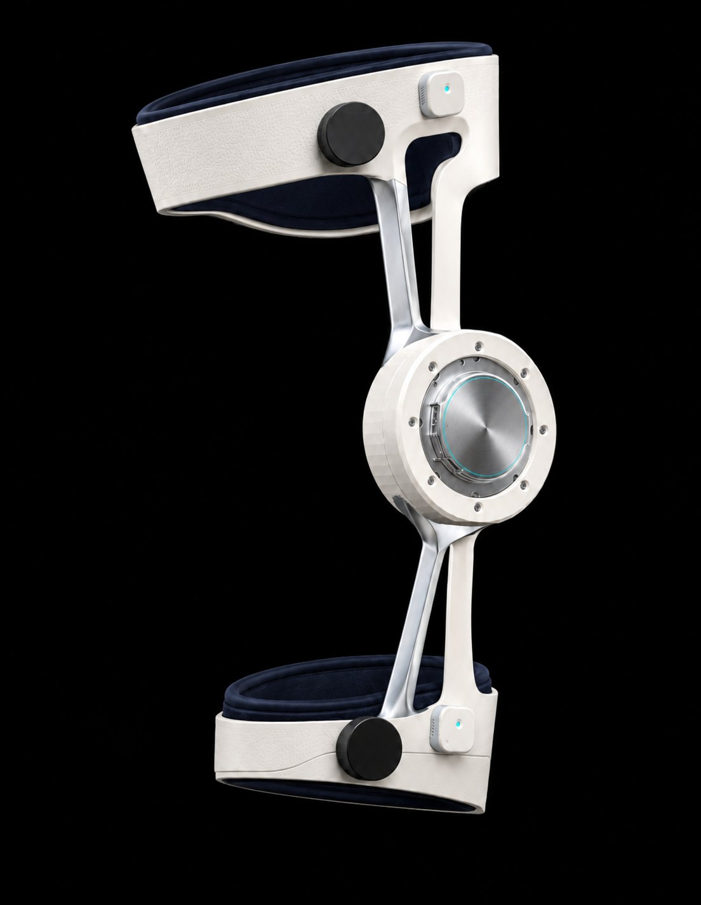
关节电机 · 同轴直驱
宇树 Go-M8010-6 · RS485——力的方向与屈伸一致
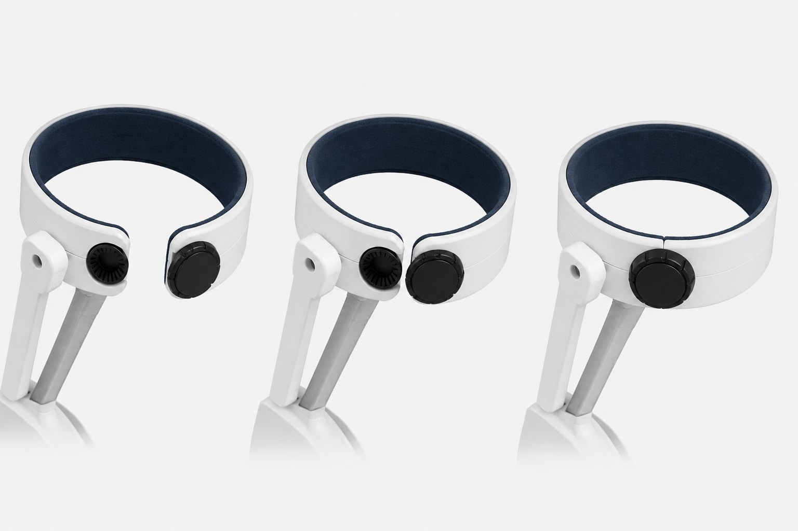
开合腿环 · 单手穿戴
01 打开穿入02 磁吸扣合03 旋转锁紧
Force Feedback · 三段式虚拟墙
FREE — SOFT — WALL
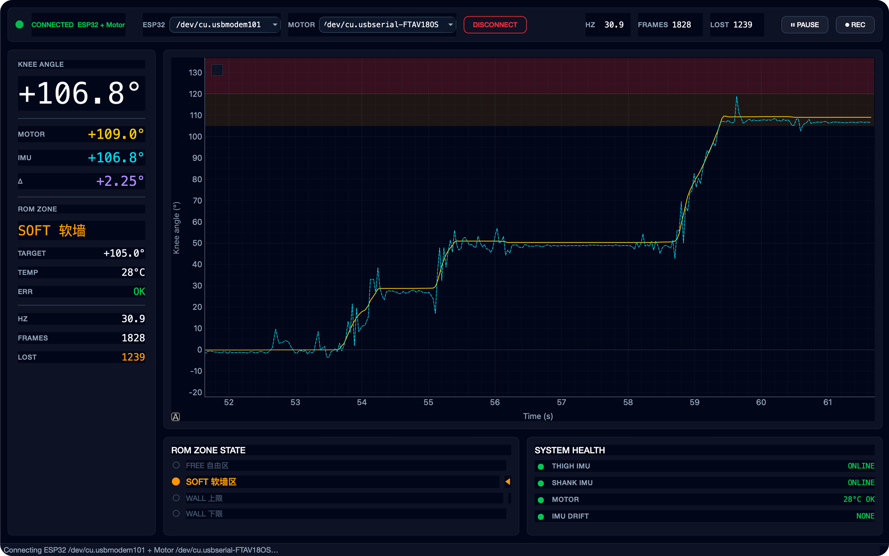
Sensing · 重力向量法
双 IMU 膝角融合 R²≈0.97
零位校准抵消装配误差，抗漂移保证长时稳定
Host · PyQt6 仪表盘
实时监测与电机直驱
电机角 / IMU 膝角双曲线，三区状态随动作点亮
支具采集 · 力反馈
Mac运算 · 直驱
iPhone交互界面
Watch触觉提示
03 INTERFACE · UI
屏幕是反思通道，不是仪表盘
动作进行中，任何视觉信息都不应是必要的。

Eyes-free Paradigm
训练中的屏幕，几乎是空的
力动作指令走力反馈、声音与触觉
瞥字号与层级按「一瞥可读」设计
语语言只在组间休息与总结出现
务实 Eyes-free
手机移开，手表保留最小可瞥视
严格 Eyes-free
全部反馈走力 / 声音 / 触觉

01 · 阶段管理
我现在处于哪里
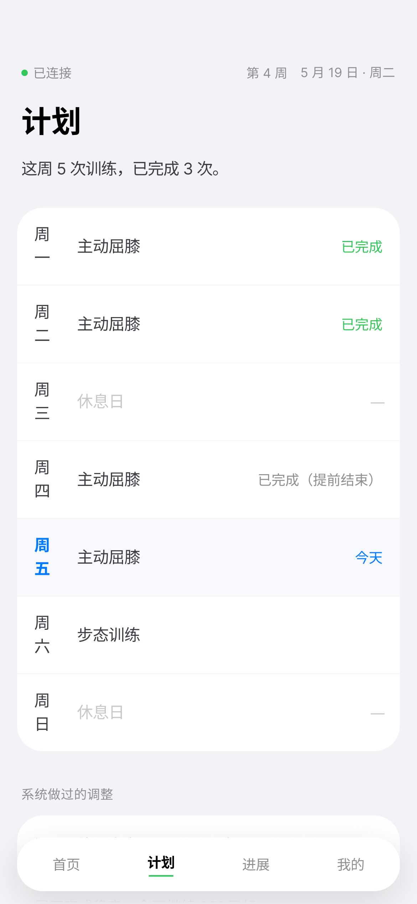
02 · 训练计划
我今天该做什么
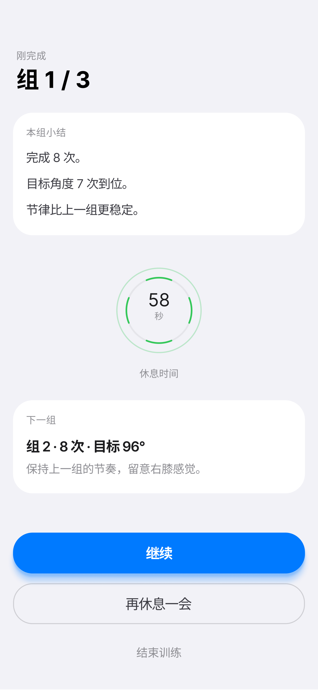
03 · 动作反馈
我做得对不对
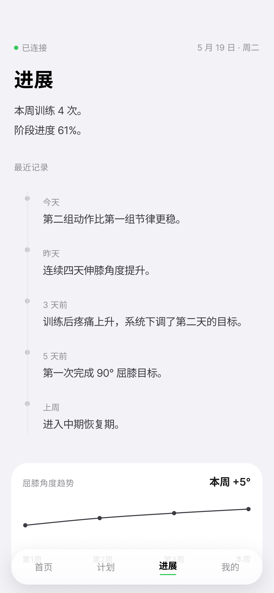
04 · 进展理解
我有没有变好
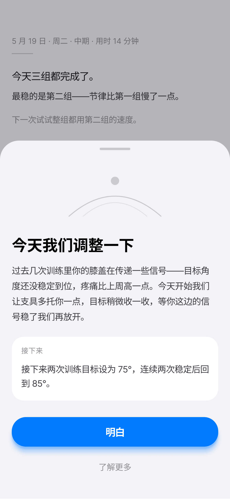
05 · 计划修订
做不到怎么办
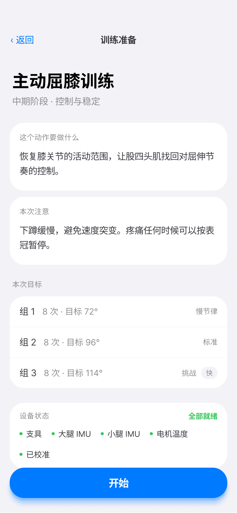
Before · 训练前
「这个动作是干什么的」
目标 · 为什么是现在 · 达标标准

During · 训练中
「我哪里错了」
一次只纠正一个错误，先方向后数字
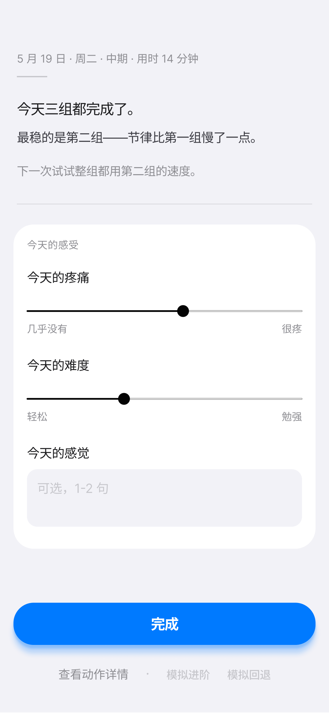
After · 训练后
「我今天练得怎么样」
总结，而不是打分——最好一点+待改一点
✗ 一般系统 · 只翻译数值
「速度过快」
错在哪、为什么重要、怎么改——全都没说
✓ 我们的总结 · 具体 · 数据锚 · 有路径
「最稳的是第二组——下次试试整组都用这个速度」
不安慰、不夸赞、没有感叹号与 emoji
太痛先退一步观察
太难聚焦一个要点
太忙拆小，别拆掉
太轻适度进阶
ACL 智能康复系统 // RESEARCH — HARDWARE — UI // 2026